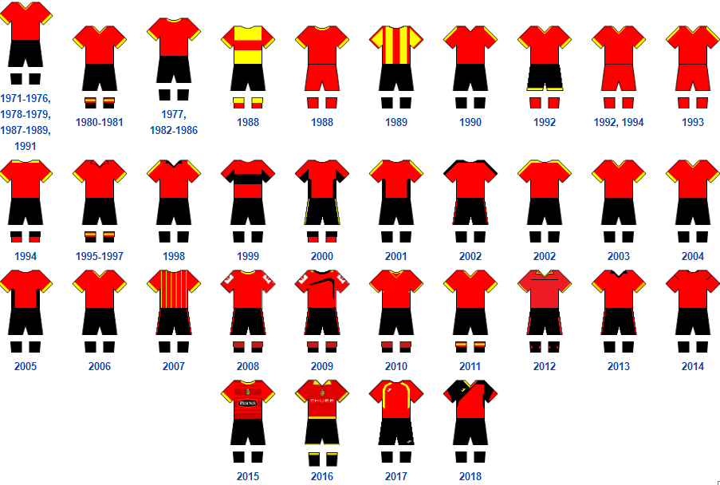
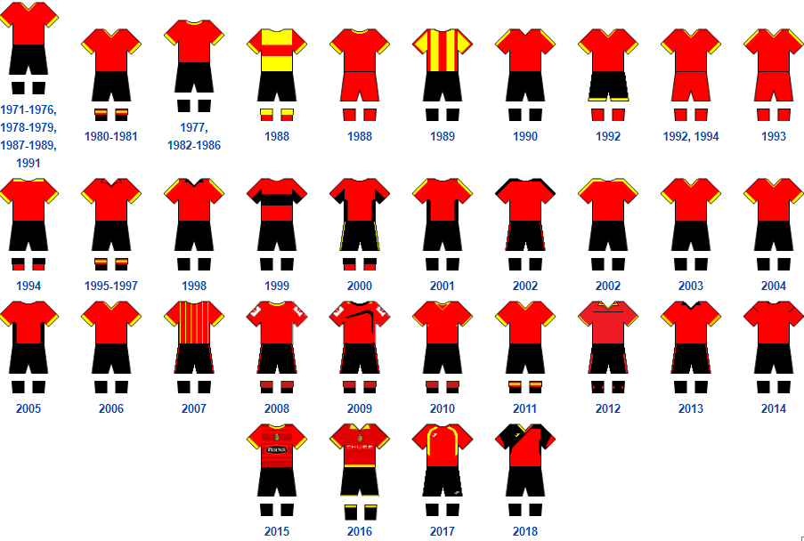
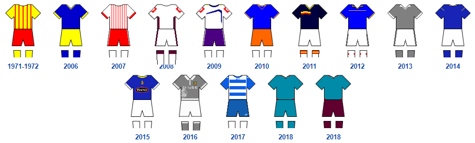
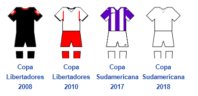
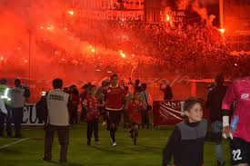
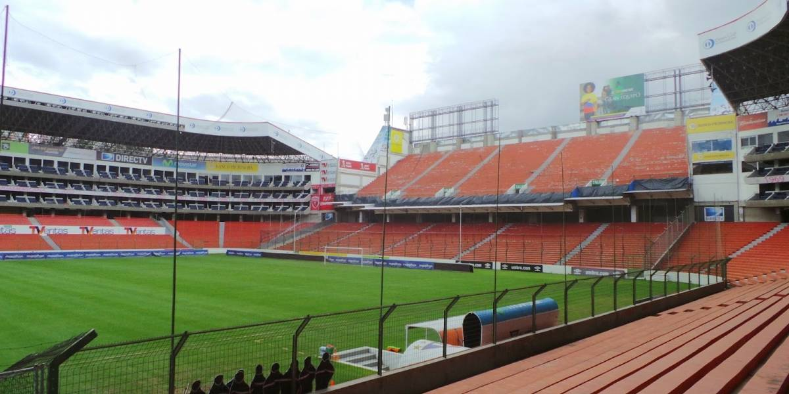

Evolución uniforme titular
Distinguido por el color a la Ciudad de Cuenca

Uniformes
- Uniforme titular: Camiseta roja, pantalón negro, medias negras.
- Uniforme alterno: Camiseta blanca, pantalón blanco, medias blancas.
Evolución uniforme titular
Distinguido por el color a la Ciudad de Cuenca
Evolución uniforme alterno
Muy distinguido y variado
Modelos especiales
Fueron utilizados en los eventos especiales como las copas sudamericanas y libertadores

-
Deportivo Cuenca - Hinchada
Hinchada En el año 2010, la empresa EUFRAL realizaron encuestas, las cuales reflejaron resultados donde el club cuenta con un 3% de aceptación a nivel nacional y con un 63% de aceptación en la ciudad de Cuenca.
Deportivo Cuenca - Estadio
Estadio El Estadio Alejandro Serrano Aguilar, propiedad de la Federación Deportiva de Azuay, es el estadio donde juega de local el Deportivo Cuenca. Su capacidad es para 16 540 personas reglamentariamente y se encuentra ubicado en la ciudad de Cuenca, en la Av. del Estadio y José Peralta